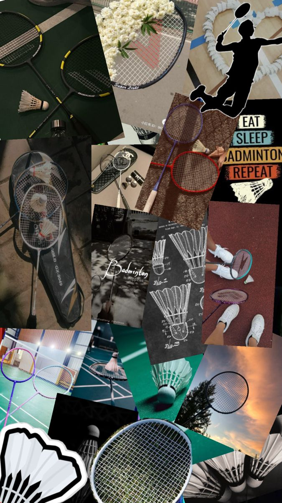
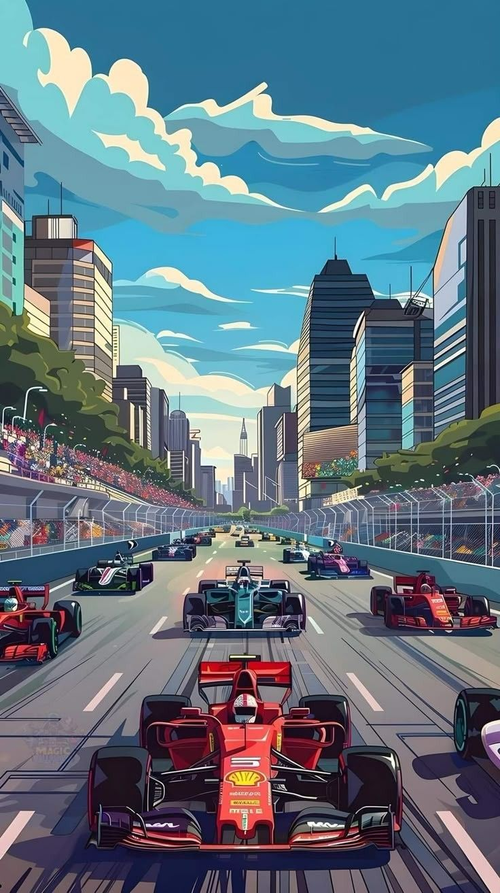

Halo! saya biasa dipanggil nayo. Saya berasal dari suatu kota di pulau Jawa. Saya sekarang sedang menempuh pendidikan S1 di Surabaya. Saya punya banyak hobi, seperti bulutangkis, travelling, adventure, nonton F1 dan lain-lain. Saya juga suka hal-hal yang berhubungan dengan mobil balap. Tim favoritku di F1 itu Mclaren, Ferrari and Williams. Okee, mungkin cukup itu dulu yaa!
More Information About Me ↓
instagramMy Hobbies
 